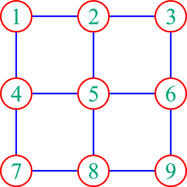
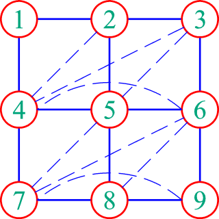

在使用直接法求解线性方程组时，注入元的数量是十分关键的，因为它直接关系到计算的复杂度，所以需要想办法减少注入元。线性方程组、矩阵分解和注入元之间的关系非得找些专业的书来看看才能清楚，不过如果用图论来解释注入元，其实是很简单直观的。

上面是一个3×3网格，我们要做的是将图中的顶点一个个地消去。所谓消去一个顶点，也就是删除它，但要把原来与它相连的顶点相互连接。如果两个顶点原本已相连，则不需改变。比如上图，消去顶点1时，要将顶点2和4相连，接着消去顶点2时，则将顶点3和4、3和5相连（4和5已经相连）。消去时添加的边，是原图所没有的，所以称为注入元。称注入“元”是因为如果用矩阵表示则图中的每条边对应矩阵里一个非对角线元素，即“边”和“元”是一回事。如果按图中序号顺序消去所有顶点，则共产生8个注入元，如下图中的虚线所示。

所谓减少注入元也就是找到合适的消去顺序使注入元尽量少。还是上面这个图，如果先消去四个角上的顶点，再消去四个边上的顶点，注入元便只有5个。既然是减少，自然希望减到最少，不过最小化注入元数量是NP完全问题，在NP=P之前，只能找些次优的、启发性的方法了。
一个直观的想法（可能也没那么直观）便是每次选会产生最少注入元的顶点消去，比如前述的对于3×3网格较好的方法就可归为此类。四个角上的顶点消去时只会产生1个注入元，而当四个角上的顶点都消去后，消去任意一条边上的顶点也只会产生一个顶点，消去剩下顶点则不会产生任何注入元。不过在消去过程中，图是不断变化的，每一步都要计算消去每个点可能产生的注入元可不是一件轻松的事。为了简化，可以认为那些有最少相邻顶点的顶点消入时也会产生最少的注入元。一个顶点的相邻顶点数称为顶点的阶（degree），所以这样的方法被称为最小阶方法（Minimum Degree），是减少注入元主要的两类方法之一。前述的对于3×3网格较好的方法也可用最小阶方法来描述。对于最小阶方法，最重要的是计算各顶点的阶，目前最突出的方法为AMD（Approximate Minimum Degree，近似最小阶）——它在页面上郑重声明它和知名芯片公司AMD一点关系也没有。算法如其名，设计了一种比较高效的近似计算顶点阶数的方法。
另一类减少注入元的方法为逐级分割法（Nested Dissection，这个中文名是我起的，也不知是否合适）。它选出图中的一些顶点作为分隔顶点，将剩下的顶点分为互不连通的两个子图，比如3×3网格中的顶点4、5、6或2、4都可作为分隔顶点。在消去顺序中，分隔顶点被放到的两个子图中的顶点的后面。对分割出的子图则继续做分割，一级一级分割下去，至不再可分为止。要想减少注入元，那么分割时应使两个子图的顶点数尽量相等，同时分隔顶点的数量尽量少。如对3×3网格，先以顶点4、5、6作分隔顶点，再对子图1、2、3取2作分隔顶点，对子图7、8、9取8作分隔顶点，便可得一个消去顺序1、3、2、7、9、8、4、5、6。同一级中各子图之间的顺序其实是无所谓的，比如前面消去顺序中1、3、2和7、9、8两部分的先后。对于3×3网格，这样得到的消去顺序和按最小阶方法得到的顺序类似，消去的结果也同为5个注入元。至于逐级分割法为什么能减少注入元，则得用图的矩阵表示才容易直观地看出。这一类方法有一优点为最小阶方法所不具备，就是对于某些种类的图，可预先算出用这一方法会得到多少注入元，而在某些情况下，可进一步证明这样的结果已是渐近最优的（指结果最多为最优结果的k倍，k是一个固定数值）。逐级分割法的计算难点显然就是如何找到最合条件的分割，不过实际上只能找较合条件的，而METIS是计算此类问题最有名的软件包。
在做流体仿真的过程中，我突然对这个问题起了兴趣，想来想去，对像本文例子那样的规则网格的情形也想出了一些东西。具体的内容这里就不写了，应该没什么人想看。如果有人一定要装出很有兴趣的样子，就去看看我用英文写的两篇（被墙，悲剧）：5点、9点，要是英文写得太差让人看不懂，可不能怪我没提醒。